IDE Delphi
Среда Delphi - это сложный механизм, обеспечивающий высокоэффективную работу программиста. Визуально она реализуется несколькими одновременно раскрытыми на экране окнами. Окна могут перемещаться по экрану, частично или полностью перекрывая друг друга, что обычно вызывает у пользователя, привыкшего к относительной “строгости” среды текстового процессора Word или табличного процессора Excel, ощущение некоторого дискомфорта. После приобретения опыта работы с Delphi это ощущение пройдет, и вы научитесь быстро отыскивать нужное окно, чтобы изменить те или иные функциональные свойства создаваемой вами программы, ибо каждое окно несет в себе некоторую функциональность, т. е. предназначено для решения определенных задач.
Запустим значок с надписью Delphi N, где N - номер версии. При этом запускается сама оболочка создания приложений, называемая интегрированной средой разработки IDE (Integrated Development Environment)
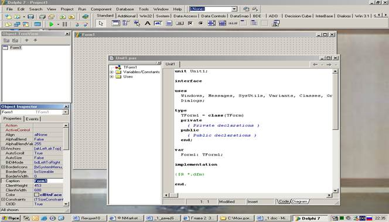
На скриншоте изображены шесть наиболее важных окон Delphi: главное окно, окно Дерева объектов (Object Tree View), окно Инспектора объектов, окно формы, браузер и окно кода программы.
Главное окно
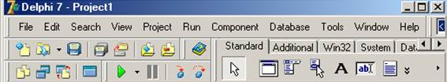
Оно располагается в верхней части экрана, в котором располагается меню, панель инструментов и палитра компонентов. Панель инструментов представляет собой набор кнопок для быстрого доступа к необходимой функции меню. На палитре компонентов, представляющей собой множественные тематические страницы, располагаются визуальные и невизуальные компоненты вашей будущей программы (невизуальные компоненты видны только при проектировании приложения). Пожалуйста, не перепутайте инструменты и компоненты. Главное окно остается открытым все время работы IDE. Закрывая его, вы тем самым закрываете Delphi и все открытые в нем окна.
Пиктографические кнопки
Пиктографические кнопки открывают быстрый доступ к наиболее важным опциям главного меню. По функциональному признаку они разделены на 7 групп. Каждая группа занимает отдельную панельку. В следующей таблице описаны команды, реализуемые стандартным набором пиктографических кнопок (пиктографические кнопки галереи компонентов рассматриваются отдельно в главе 4).
| Иконка | Реализуемое кнопкой действие |
| Группа Standard | |
| Открывает доступ к Репозиторию Объектов. Эквивалент опции File | New | Other (этой кнопки нет в версиях 1, 2 и 3) | |
| 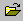 | Открывает существующий файл. Эквивалент опции File | Open File |
| 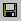 | Сохраняет файл на диске. Эквивалент опции File | Save File (клавиши быстрого доступа Ctrl-S) |
| 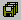 | Сохраняв все файлы проекта. Эквивалент опции File | Save All |
| 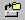 | Открывает созданный ранее проект программы. Эквивалент опции File | Open Project (клавиши быстрого доступа Ctrl-F11) |
| 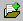 | Добавляет новый файл к проекту. Эквивалент опции Project | Add to project (клавиши быстрого доступа Shift-F11) |
| 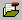 | Удаляет файл из проекта. Эквивалент опции Project | Remove from Project |
| Группа View | |
| Выбирает модуль из списка модулей, связанных с текущим проектом. Эквивалент опции View | units (клавиши быстрого доступа Shift-F12) | |
| 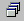 | Выбирает форму из списка форм, связанных с текущим проектом. Эквивалент опции View | Forms (клавиши быстрого доступа Ctrl-F12) |
| 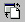 | Переключает активность между окном формы и окном кода программы. Эквивалент опции View | Toggle Form/Unit (клавиша быстрого доступа F12) |
| Создает новую форму и добавляет ее к проекту. Эквивалент опции File | New | Form (этой кнопки нет в версиях 1 и 2) | |
| Группа Debug | |
| 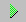 | Компилирует и выполняет программу. Эквивалент опции Run | Run (клавиша быстрого доступа F9) |
| 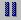 | Реализует паузу в работе отлаживаемой программы. Эквивалент опции Run | Program Pause |
| 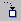 | Осуществляет пошаговую трассировку программы с прослеживанием работы вызываемых подпрограмм. Эквивалент опции Run | Trace into (клавиша быстрого доступа F7) |
| 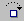 | Осуществляет пошаговую трассировку программы, но не прослеживает работу вызываемых подпрограмм. Эквивалент опции Run | Step Over (клавиша быстрого доступа F8) |
| Группа Custom | |
| 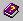 | Открывает доступ к встроенной справочной службе. Эквивалент опции Help | Delphi Help (этой кнопки нет в версиях 1, 2 и 3) |
| Группа Desktops | |
| 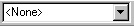 | Список выбора возможных вариантов настройки остальных окон Delphi |
| 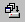 | Сохраняет текущую настройку окон Delphi |
| 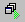 | Выбирает настройку окон, соответствующую отладочному режиму |
| Группа Internet | |
| 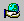 | Начинает создание нового приложения по технологии WebSnap (для Интернет) |
| Создает новую страницу приложения WebSnap | |
| 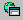 | Создает новый модуль данных приложения WebSnap |
Настройка окон
Начиная с версии 5, главное окно обогатилось тремя новыми интерфейсными элементами, указанными в группе Desktops предыдущей таблицы. С помощью этих инструментов программист может подготовить несколько вариантов расположения остальных окон Delphi и сохранить их в настроечном файле.
Обычно выбираются две или три основные конфигурации окон: для режима разработки форм, для кодирования и для отладки. При разработке формы на экране должна быть видна сама форма, Дерево объектов и Инспектор объектов. Настроив соответствующие размеры и положение этих окон, такую настройку можно сохранить под именем, например, Design Desk. Для режима кодирования обычно нужно только максимально распахнутое на экран окно кода с браузером Code Explorer и пристыкованное к нему окно Дерева объектов. Такую конфигурацию можно сохранить под именем code-Desk. Наконец, в отладочном режиме к окну кода желательно “прицепить” некоторые отладочные окна, такие как Watches (окно наблюдений за переменными/выражениями) и Breakpoints (окно создания/настройки точек контрольного останова). Такую конфигурацию можно сохранить под именем DebugDesk, например. Теперь при переходе к тому или иному режиму достаточно раскрыть список и выбрать из него нужную настройку. Если вы предварительно укажете с помощью кнопки настройку для отладочного режима, эта стройка появится автоматически, как только среда перейдет в режим отладки.
Палитра компонентов
Палитра компонентов - это главное богатство Delphi. Она занимает правую часть главного окна и имеет закладки, обеспечивающие быстрый поиск нужного компонента. Под компонентом понимается некий функциональный элемент, содержащий определенные свойства и размещаемый программистом в окне формы. С помощью компонентов создается каркас программы, во всяком случае - ее видимые на экране внешние проявления: окна, кнопки, списки выбора и т. д.
Окно дерева объектов
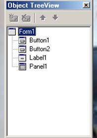Это окно появилось в версии 6 и предназначено для наглядного отображения связей между отдельными компонентами, размещенными на активной форме или в активном модуле данных. Щелчок по любому компоненту в этом окне активизирует соответствующий компонент в окне формы и отображает свойства этого компонента в окне Инспектора объектов. Двойной щелчок приводит к срабатыванию механизма Code Insight, который вставляет в окно кода заготовку для обработчика события OnClick. Наконец, компонент можно “перетащить” в окне и таким образом поменять его владельца (свойство parent). В предыдущих версиях такую замену можно было сделать только с помощью межпрограммного буфера обмена Clipboard
Отобразить это окно на экране можно, выбрав в меню View пункт Object TreeView или нажав клавиши Shift+Alt+F11
Окно инспектора объектов
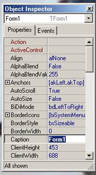Любой размещаемый на форме компонент характеризуется некоторым набором параметров: положением, размером, цветом и т. д. Часть этих параметров, например, положение и размеры компонента, программист может изменять, манипулируя с компонентом в окне формы. Для изменения других параметров предназначено окно Инспектора объектов. Это окно содержит две страницы - Properties (Свойства) и Events (События). Страница properties служит для установки нужных свойств компонента, страница Events позволяет определить реакцию компонента на то или иное событие. Совокупность свойств отображает видимую сторону компонента: положение относительно левого верхнего угла рабочей области формы, его размеры и цвет, шрифт и текст надписи на нем и т. п.; совокупность событий - его поведенческую сторону: будет ли компонент реагировать на щелчок мыши или на нажатие клавиш, как он будет вести себя в момент появления на экране или в момент изменения размеров окна и т. п.
Каждая страница окна Инспектора объектов представляет собой двухколончатую таблицу, левая колонка которой содержит название свойства или события, а правая - конкретное значение свойства или имя подпрограммы. Строки таблицы выбираются щелчком мыши и могут отображать простые или сложные свойства. К простым относятся свойства, определяемые единственным значением - числом, строкой символов, значением True (Истина) или False (Ложь) и т. п. Например, свойство caption (Заголовок) представляется строкой символов, свойства Height (Высота) и width (Ширина) - числами, свойство Enabled (Доступность) - значениями True или False. Сложные свойства определяются совокупностью значений. Слева от имени таких свойств указывается значок “+”, а щелчок мышью по этому символу приводит к раскрытию списка составляющих сложного свойства. Чтобы закрыть раскрытый список, нужно щелкнуть по значку “-” сложного свойства
В верхней части окна Инспектора объектов располагается раскрывающийся список всех помещенных на форму компонентов. Поскольку форма сама по себе является компонентом, ее имя также присутствует в этом списке. В отличие от предыдущих версий раскрывающийся список содержит не только имена компонентов, но и их классы.
В локальном меню окна, которое появляется после щелчка по нему правой кнопкой, имеется ряд опций, позволяющих настроить окно. В частности, после выбора stay on Top, окно Инспектора объектов будет “всплывать” над всеми другими окнами независимо от его активности. Такое состояние окна удобно при частом его использовании, например, при конструировании сложной формы, содержащей множество компонентов. Если выбрать в локальном меню опцию Arrange и затем by Category, все строки окна Инспектора объектов будут представлять собой раскрывающиеся списки свойств, упорядоченные по категориям
Отобразить это окно на экране можно, выбрав в меню View пункт Object Inspector или нажав клавишуF11
Окно редактора кода
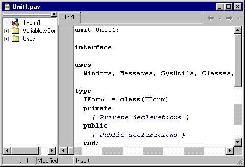Оно имеет заголовок на момент первого запуска Unit1. В редакторе кода могут быть открыты сразу несколько файлов. Каждый открытый файл размещается на отдельной странице, а его название отображается на вкладке в верхней части.
Если в вашей программе три окна, то они будут взаимодействовать в процессе работы с тремя так называемыми модулями (Unit). Все эти модули и отображаются в редакторе.
В окне кода программист непосредственно пишет текстовую часть программы.
Текстовая часть разбивается на несколькие части, называемые процедурами и функциями, которые работают отдельно одна от другой. Возможно и перенаправление выполнения программы их одного места в другое.
Вместе с окном кода обычно активизируется) браузера Code Explorer, облегчающее поиск нужных элементов в случае, когда в окне набрано много строк кода. Двойной щелчок мышью на элементе в окне браузера приводит к позиционированию текстового указателя в окне кода на описание соответствующего объекта или его первое упоминание. При разработке несложных учебных программ можно закрыть окно браузера маленькой кнопкой 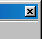в его верхнем правом углу. Восстановить закрытое окно можно после щелчка правой кнопкой мыши по окну кода и выбора опции view Explorer. Замечу, что окно браузера располагается на вспомогательной панели и имеет управляющую полосу в верхней части рамки. “Схватив” ее мышью, вы можете перетащить окно на любое свободное место экрана или “причалить” его к окну Инспектора объектов.
В версии 7 на нижней кромке окна кода располагаются две закладки - Сode и Diagram. Щелчок по последней активизирует страницу диаграмм. Первоначально эта страница пуста. Чтобы наполнить ее, нужно “перетащить” мышью два и более компонента из окна Дерева объектов.
Окно формы
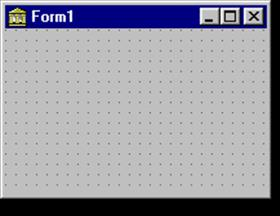Как вы уже, наверное, знаете или догадываетесь, каждое Windows-приложение выполняется в собственном окне. Минимальное количество таких окон равна 1. Delphi при запуске автоматически предлагает пользователю новый проект, открывая пустое (незаполненное) окно под названием Form1 и назначает его главным окном. То есть вы уже видите то самое окно, которое будет содержать ваша программа. Перенося на него элементы из палитры компонентов, вы тем самым предварительно оформляете его. Главное окно в проекте может быть только одно. Все другие создаваемые окна будут дочерними. Закрывая главное окно стандартной кнопкой закрытия окна, или программно, вы закрываете и все дочерние окна. Представьте это себе на примере текстового редактора MS Word. Главное окно создается первым, и соответственно пользователь его видит тоже первым. Максимально возможное количество открытых проектировщиков форм - количество окон в вашем проекте. Но для начала мы с вами будем работать только с одним окном в проекте.
Отобразить это окно на экране можно, выбрав в меню View пункт Toggle Form/Unit или нажав клавишу F12 или щелкнув по соответствующей пиктографической кнопке